Team of 5, 2025
The Infinite Tower
Rune puzzle engine with ordered chain reactions, about 72% of the code
Gameplay & tools programmer (Unity), looking for an internship
Game Technology student at Politeknik Elektronika Negeri Surabaya (PENS) and co-founder of A FAIR Studio. I’ve shipped 2 games on Steam, and our games have won 6 competition awards.
I like the logic players never see, like how a resident decides what to do next, how a boss changes phase and how cargo never gets lost. I’ve built it across 9 games.
A system isn’t done until it feels right, so I add the small things that sell it, like a building that settles into place, a warning that lands just before the hit and a flash when you take damage.
When a job keeps repeating, I build a tool for it. Auto Collider and LitMotion Tween Editor, my two editor packages, bring that work into Unity and are backed by 600+ tests.
I take a game past “it runs on my machine”. That means Steam leaderboards and achievements, and builds for Windows, Steam Deck, macOS, Android and iOS.
Team of 5, 2026
A cozy city builder on a child’s bedroom floor
My roleLead gameplay systems programmer
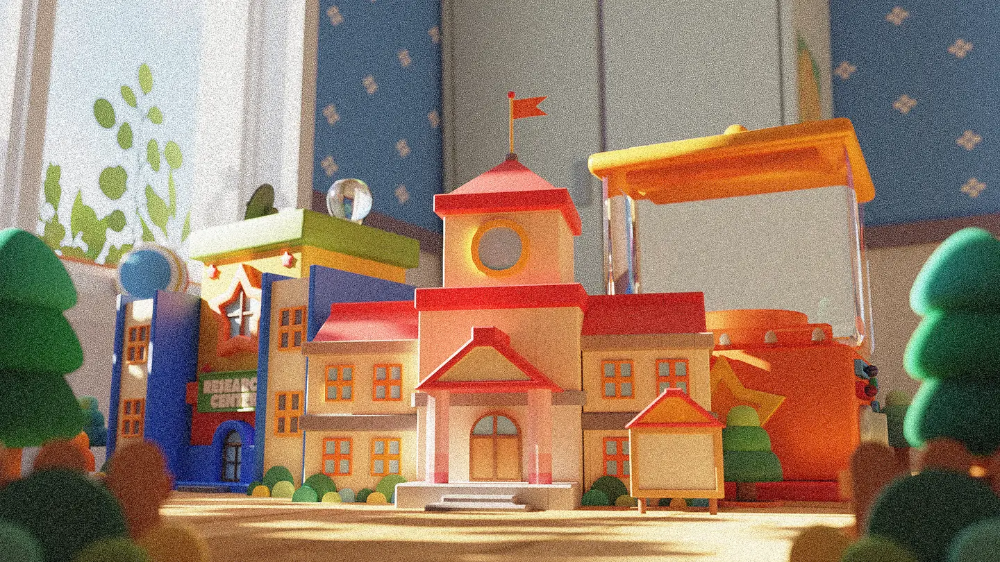
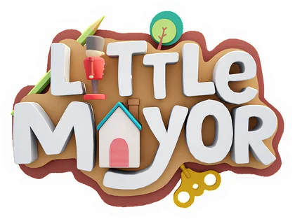
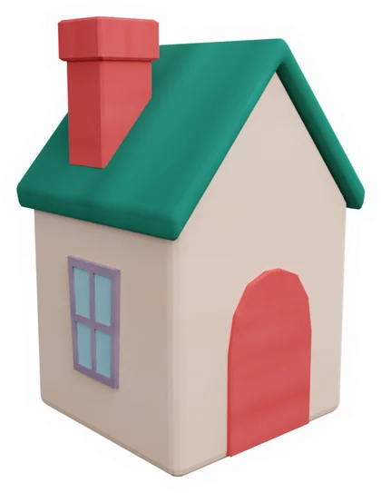
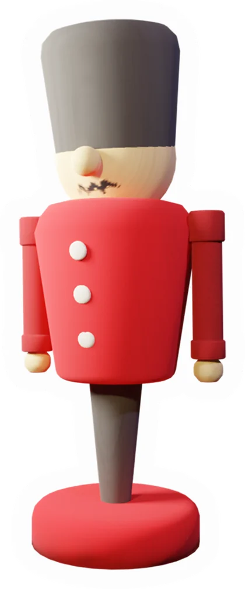
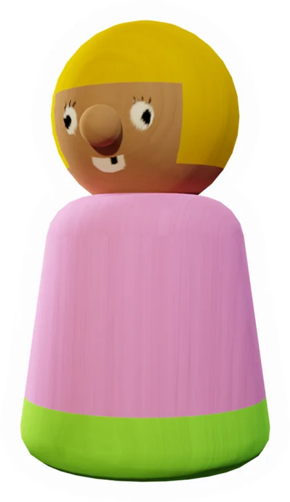
Unity 6, C#, URP, HLSL, Cinemachine 3
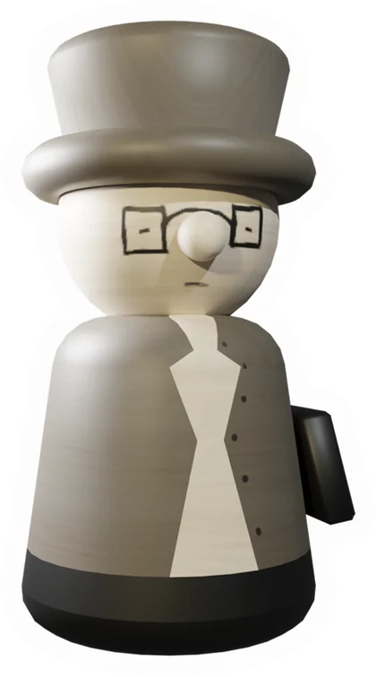
I built the grid and map expansion, building placement with ghost previews and drag-painted roads, and a multi-pass A* that tries roads first, then grass, then the closest reachable tile. Search buffers are allocated once, so a path request creates no garbage.
Residents used to have eight decision paths that disagreed with each other. I replaced them with one state table and a priority-band ladder (roam, routine, errand, work, fun, rest, player command), so a lower-priority request can never interrupt a higher one.
Carriers haul goods to the nearest storage. Sell orders reserve stock nearest-first, and cargo is refunded or rerouted if a building is demolished mid-trip, so nothing is lost or sold twice.
A URP RenderGraph outline using a separable distance transform (50 texture reads per pixel instead of 625), the orbit camera, the hand that places buildings, tween presets, an obstacle baker, custom Inspectors and an in-game debug console.
Team of 5, 2025–2026
A paper-craft toy-plane shoot-’em-up with local co-op and multi-phase bosses
My roleCombat and gameplay programmer
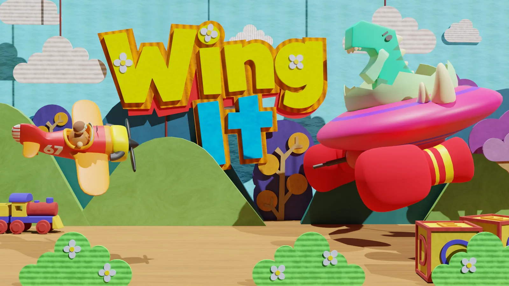
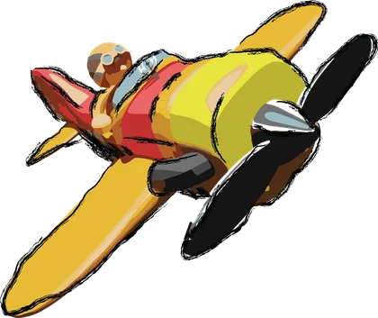
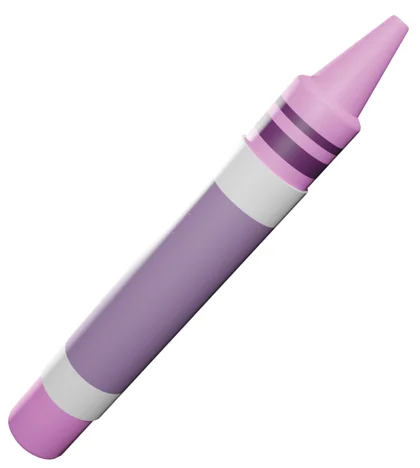
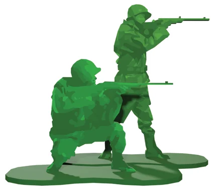
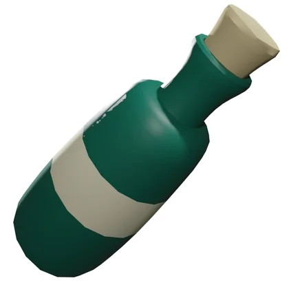
Unity 6, C#, URP, Input System, Cinemachine 3
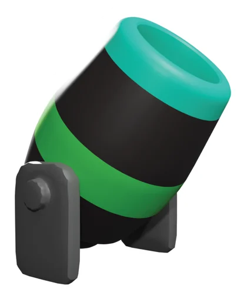
A six-state boss controller (intro, phase 1, transition, phase 2, defeat) with separate health pools, an invulnerable transition, weak spots and materials that wear down with damage. Attack phases plug in through an interface, which I added when the second boss arrived.
Designers chain seven attack types in the Inspector: gatling patterns, punches, an aimed laser and minion summons. Attacks in one step run together, and warnings are timed so damage lands with the animation.
Minibosses share one base class with overridable attack hooks, minion waves are scripted, and bullets and waves come from object pools. Bosses target the closest or a random living player, so both co-op players get attention.
Six weapons including homing rockets and an arcing mortar, gamepad navigation for five menu screens, and 48 boss and enemy animation clips and controllers set up in Unity.
Team of 5, 2025–2026
A co-op logic-gate puzzle platformer
My roleGameplay and platform programmer
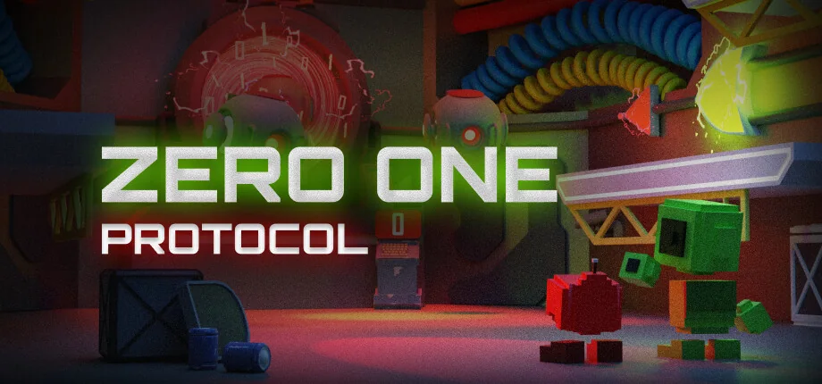
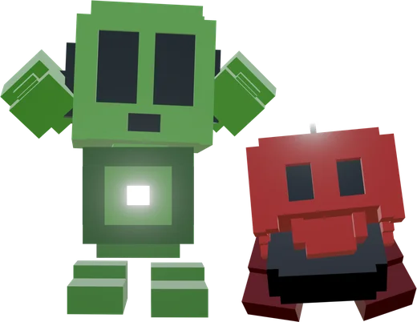
Unity 6, C#, Input System, Cinemachine, Steamworks.NET
I wrote the original logic-gate prototype (AND, OR, NOT, XOR, doors and boxes) that the puzzle system grew from, then stayed on the project for 15 months and 191 commits.
Each player is bound to the keyboard, one specific gamepad, or touch controls. If a gamepad disconnects, that player falls back to the keyboard and switches back when it returns.
Swaps a player between Zero and One by activating a pre-made copy of the other character with all input settings carried over, snapped to the ground before input turns on. Nothing is created mid-level and nobody falls through the floor.
Leaderboards for 15 levels plus total time (global, nearby and friends) and achievements, with scores queued until Steam finds the board. Build profiles for five platforms, a Steam Deck jump debounce and 120 Hz input polling on macOS.
Team of 5, 2025
An iced-tea stand tycoon with a full customer simulation
My roleGameplay programmer, customer simulation
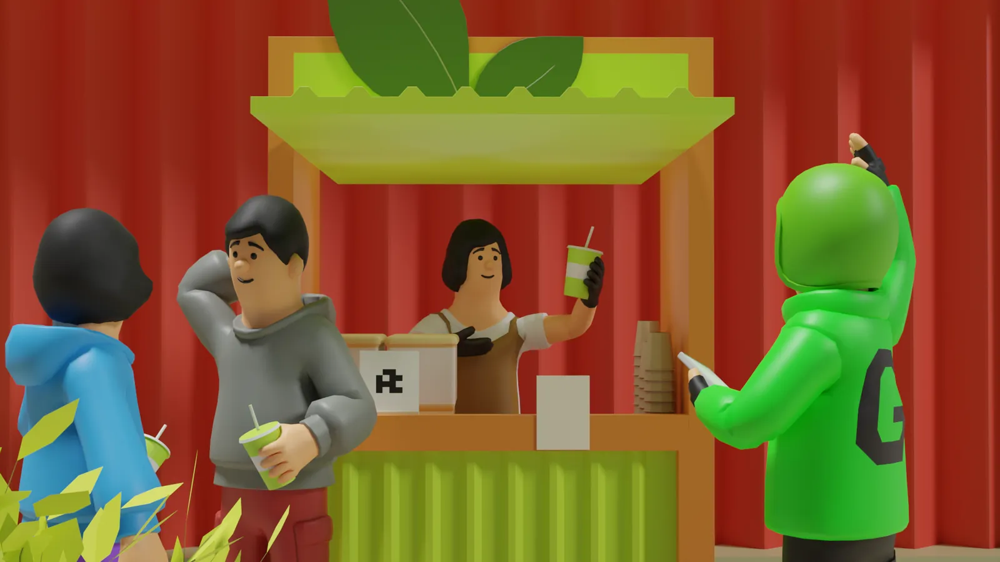
Unity 6, C#, NavMesh, Timeline, DOTween
Each day’s customer count comes from weather, price, popularity and advertising, with price sensitivity that rises sharply and advertising that has diminishing returns.
NavMesh customers walk up, join the queue, check the price, buy, and react to how good the recipe is.
Clearing trash in a streak builds a combo that triggers a rush of extra customers.
A tool that scored all 1,400 recipe combinations, used to tune recipe rewards and pricing.
Unity editor package, version 1.3
Generates the cheapest collider that fits, in 3D and 2D
What it doesSelect your props, press one shortcut, and every object gets a fitted collider
Unity 6, C#, Burst, UPM package
Select your props and press Shift+Alt+C. The Auto strategy chooses per mesh: a primitive when one fits, a convex hull for convex shapes, convex parts for concave shapes on moving bodies and an optimized mesh for static ones. A batch of 1,000 props takes a couple of seconds and undoes in one step.
The Mesh Collider Optimizer analyzes existing mesh colliders, shows an error heatmap and simplifies them. Originals are kept, so you can always restore them.
An edit tool with face handles, move, rotate, vertex snapping, mirror and merge, plus a paint mode that turns painted triangles into a collider. Every operation is one undo step.
Sprites are traced from their pixels, tilemaps become one baked polygon, and a Collider Group reports which part of an object was hit. Collider Doctor scans for mistakes that break or slow down physics.
Unity editor package, version 0.1
Build and scrub tween animations on a timeline in the Inspector
What it doesAuthor, chain and preview animations without writing code
Unity 6, C#, LitMotion 2, uGUI, TextMeshPro, URP
Clips sit on tracks in the Inspector. Drag to move, pull the edges to trim, scrub, and press Play to preview in the editor without entering Play mode.
Each clip has a type, a target, values in absolute, current, relative or offset mode, timing, loops and an easing curve you can see.
24 tween types and 14 presets. A newly added step already does something visible, at a sensible size for 3D objects and UI.
One line on the Tween Player plays an animation by its ID. uGUI, TextMeshPro and URP support turn on by themselves, and your own channels plug in through extensions.
Team of 5, 2025
Rune puzzle engine with ordered chain reactions, about 72% of the code
Team of 5, 2025
Diggable trash terrain, sorting plant and excavator physics
Solo game jam, 2026
Minesweeper with boss rules and a custom tile shader
Team of 2, 2025
Mobile math card puzzle with always-solvable levels
Team of 3, 5 days, 2025
Torch burn mechanic, rain and wind hazards, player controller
Open to Unity programming internships